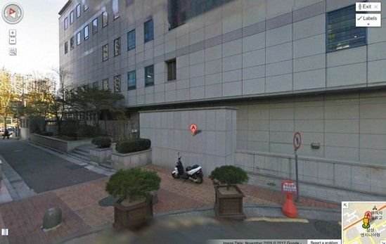

相信很多人都有过毁灭地球拯救世界这类的超级梦想，也有不少人扬言要破坏互联网。在谈笑之余，我们会想，是否有人可以真正的摧毁互联网呢？实际上，这件事在物理上是可以实现的。
毫无疑问，如果你真的摧毁了互联网，那么这将成为人类历史上的恐怖主义之壮举，也意味着对世界各国宣战。所以，就把以下的内容当成是一次思想上的实验吧。
首先，我们不要再把互联网当成看不见摸不着的东西，其实它是由大量的金属、塑料和光纤组成的。其范围遍及全球，就像个机器怪兽抱住整个地球一样。所以我们寻找网络的物质基础，穿越海洋和陆地，来找出到底应该怎么做。
互联网没有总开关，没有自我摧毁按钮，不会因断电而受到影响。正因其优秀的设计和不断的摸索和改进，互联网几乎是坚不可摧。像光纤网络，就算你砍断了大部分，剩下的还是会保持传输，能够自动重新确认传输路径，保证了大陆或者国家之间的连接通畅。
不过就像地球上其它东西一样，如果它是被建造出来的，那么总是可以被摧毁的。也就是说，通过足够多的努力，你可以像砍树一样彻底摧毁互联网，只要你知道从哪开始砍。
第一步：切断光缆

海底光缆位置示意图
互联网因成千上万米长的厚重而破旧的线缆连接而存在。漫长的海底光缆连接各个大陆，使世界连成一个整体。正如之前所说的，光缆的连接可以互相支持，当一条断了，另一根就会接起任务。那么，如果把它们全部切断呢？
互联网是一个布满线缆的网络。家里的电脑，办公室里的设备，以及国外的服务器，都通过这些线缆连接着。切断这些连接，网络就不能穿越大洋通信。互联网就会立刻断裂。
在这个页面可以找到世界范围内的每一根互联网主线缆。
这些海底光缆有时是伪装起来的，或者是部分掩埋的。但有时候也像废弃的冲浪板一样裸露在沙滩上。对于那些埋在沙滩下的光缆，你可以用这样一个线路追踪器来找出具体的位置。
虽然很多光缆的精确位置和它们的着陆点都是不公开的，但其实总能在一些有名的海岸和热闹的城镇看到。
下面的三个光缆点如果被破坏，后果会非常严重。一个点的破坏只会导致减速和阻碍，但不是完全的瘫痪。但是大洋彼岸的站点就会立即不可连接，很多其他网站也会太慢以至于不能使用。互联网仍然会在混乱而且缓慢的运转，但是这毕竟是个好的开始。

从上到下依次为长岛Mastic海滩，纽约州Manahawkin市和纽约州Tuckerton
这几个站点连接美国的东海岸和西欧，是一些世界最稠密、重要的基础设施点，破坏了这些连接点，全球经济会随之崩塌。
除了上述3个站点还有其它一些最能削弱互联网连接的地点：新加坡/埃及（地中海和红海）/英国西南地区/东京/香港/南佛罗里达州/西西里岛/孟买/金奈，摧毁这些地方的站点，互联网就不再是一个全球性的整体，每片大陆和小岛都被孤立起来了。
第二步：破坏根服务器

M服务器由WIDE Project运行，地点在首尔。
域名输入实际上是对IP字段进行转换的结果，像"Google.com"的IP地址就是74.125.228.37。但是网站有成千上万，IP地址的难以记忆令这个转换过程不可或缺。
目前全球共有13台根域名服务器，名字分别为"A"至"M"，负责IP地址域名的解析。让这些机器瘫痪，想上网就只能记数字了。
怎样找到并且摧毁这些服务器呢？就像之前的光缆，这些服务器也是公开的秘密。

全球域名服务器分布图，除了13台根域名服务器，还有大量其他域名服务器
比如说我们想要摧毁"K"服务器，它由一家名为RIPE NCC的公司运行。去该公司的网站，然后用谷歌地图就能找到服务器的位置。不过想要真的进去就难上加难了，其守卫有多森严可想而知。所有的13台根服务器的所在地点都是可查询的。
第三步：破坏数据中心
数据中心
第一步切断光缆后，信息再不能在世界范围内传递，各地成为了一座座孤岛。再加上破坏了根服务器，网络地址也变成了无法解析的IP地址。摧毁互联网也就剩下了一步：炸毁数据中心。
数据中心都是些很不起眼的建筑，里面装着那些能让我们浏览网站，收发邮件，聊天游戏的服务器。这些建筑通常很高大，因为不是给人设计的，所以大多没有窗户。那些装着机器的屋子通常很暗，并且保持低温使机器正常运转。
纽约市的哈德逊街60号
纽约市的哈德逊街60号的建筑是全球互联网的重要枢纽：这座建筑的第9层有1394平方米，是当地、全美国以及全球多层光纤电缆的汇聚地。服务器、存储数据和网络设备在这里连在一起，一系列光学接口、同轴电缆等通过一系列连接板与其它网络连通。像这样的数据中心就是互联网的物理中心，本质上说就是一个巨大的以太网交换机。
若是能破坏这一层，整个地区的连接就将断裂，世界范围的互联网连接也会受到影响。不仅仅是某些网站本身被抹掉，有些公司在数据中心存储的数据也会消失，你上传的所有照片或者歌曲也可能不复存在。
像这样的数据中心全世界有很多，目前中国有9个托管数据中心，北京有2个，上海有4个，成都、浙江、深圳各有一个。
游戏结束
现在数据已经被彻底冻结了。所有的道路、桥梁和交通指示灯都被摧毁，数据哪里都去不了。剩下的也就是一些局域网了，它们是网络，但不再是互联网了。至此，互联网已被成功摧毁。游戏结束。
从上面我们可以看到互联网的强大和脆弱。当然也没有人能够同时攻击地球互联网的所有节点，即使是成千上万个人的团队来做，修复速度也很可能超过破坏的速度。我们的目的不是真正摧毁互联网，而是由此可以看到互联网基础设施的复杂和有趣。
（文章翻译自Gizmodo网站： How to Destroy the Internet 作者：SAM BIDDLE）
（本文来源：南方周末）

点我分享笔记